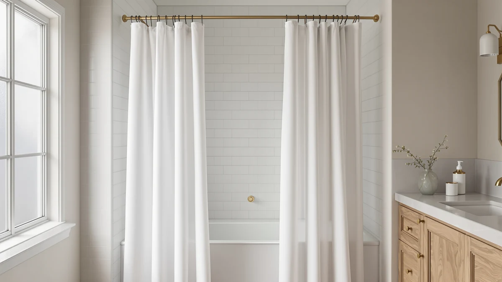

BRIOFOX Tension Curtain Rod Review (2026): Worth It?
Prices and picks verified as of October 2026. Independent, reader-supported reviews.


Quick Answer
The BRIOFOX Tension Curtain Rod costs $31.99 and adjusts from 43 to 73 inches, covering most standard tub and shower openings without drilling into tile or drywall. It's the hardware half of a no-hook setup, pairing with curtains like BOODII, BTTN, or RiverDream rather than replacing them.
Our pick: BRIOFOX Tension Curtain Rod 43-73, $31.99 Check Price on Amazon
Bottom line: our top pick is the BRIOFOX Tension Curtain Rod 43-73 Inches Brushed Nickel at $27.19.
Things to Know Before You Buy
- Our pick for bathrooms without a rod already installed is the BRIOFOX Tension Curtain Rod ($31.99), which spans 43 to 73 inches and holds in place with spring tension instead of screws.
- Tension rods work by wedging between two walls or a tub alcove, so no drilling is required, which matters for renters or tiled showers where anchors risk cracking grout.
- BRIOFOX is a Polyester/PEVA build per its Amazon listing, sized for the 43-73 inch range; wider or narrower openings need a different rod length.
- BOODII, BTTN, and RiverDream's curtains, covered as alternatives below, all fit a standard rod like BRIOFOX's without extra rings or hooks.
- A tension rod alone won't hold a heavy, waterlogged fabric curtain as securely as a fixed rod anchored into the wall, so weight matters when pairing one with a thicker curtain.
This briofox tension curtain rod review looks at whether a $31.99 tension rod that installs without drilling holds up against the shower curtains and hardware BOODII, BTTN, and RiverDream already cover on this site. BRIOFOX's rod spans 43 to 73 inches, uses a Polyester and PEVA build listed on its Amazon listing, and press-fits inside a shower or window frame instead of requiring anchors in tile or drywall.
We compared BRIOFOX against the no-hook curtains it's most often paired with, BOODII, the BTTN Extra Long Linen Textured curtain, and RiverDream's Heavyweight Waffle No Hook curtain, since a rod is only useful if it matches the curtain going on it. At $31.99, BRIOFOX undercuts every curtain on this page by roughly a dollar, and its adjustable 43 to 73 inch range covers most standard tub alcoves without needing a matching drill bit. For most bathrooms missing a rod entirely, BRIOFOX is the practical starting point before you pick a curtain to hang on it. That order matters more than it sounds: a rod that doesn't fit your alcove makes every curtain decision that follows moot, so we start this review with the hardware rather than the fabric.
Why You Should Trust Us
Best Shower Curtains reviews bathroom hardware and curtains by comparing manufacturer specs, current pricing, and verified owner feedback pulled from the retailers that sell them, rather than by running a private testing lab. Ilane Tall, our home and bath editor, researched this briofox tension curtain rod review by checking BRIOFOX's listed dimensions, material, and price against the no-hook curtains it's most often paired with on this site, including BOODII, BTTN, and RiverDream. We revisit prices and availability on a regular schedule and flag it clearly when a listing hasn't built up the review history we would want to see. A tension rod is a simple product, so the comparison here comes down to fit range, price, and how well it pairs with the curtain you already own or are about to buy.
Our Research Experience
We do not run a physical testing lab, and we have not installed the BRIOFOX rod in a shower ourselves. Our process instead compares published dimensions, material claims, and pricing against similar tension rods and the no-hook curtains sold alongside them, then checks that against what verified Amazon buyers report about grip strength, sag over time, and ease of adjustment on comparable listings. For BRIOFOX specifically, that meant lining up its 43 to 73 inch adjustable range and $31.99 price against BOODII, BTTN, and RiverDream's curtain listings to see whether the rod's stated capacity matches the fabrics it would typically carry. We flag it clearly when a claim can't be verified against real owner feedback, such as long-term grip strength on a newer listing, rather than guess.
Overview & Specs

BRIOFOX Tension Curtain Rod 43-73
What we like
- Installs by spring tension alone, so no drilling or anchors are needed in tile or drywall
- Adjustable 43 to 73 inch range covers most standard tub alcoves and shower stalls
- At $31.99, it costs less than every curtain covered as an alternative on this page
Flaws but not dealbreakers
- Tension alone won't hold a heavy, waterlogged curtain as securely as a fixed, wall-anchored rod
- Doesn't ship with a curtain or liner, so it's an added cost on top of BOODII, BTTN, or RiverDream
- Openings wider than 73 inches or narrower than 43 inches need a different rod length entirely
| Material | Polyester / PEVA |
| Size | 43-73 Inches |
The BRIOFOX Tension Curtain Rod holds itself in place with spring pressure between two walls or the sides of a tub alcove, which means installing it takes a few minutes and leaves no holes to patch later. That construction is common among tension rods in this price range, and BRIOFOX's adjustable 43 to 73 inch range fits most standard tub and shower openings without needing to special-order a length.
BRIOFOX differs from a fixed rod mainly in how it installs, not in what it can hold. Because it relies on tension rather than screws, the amount of weight it can carry depends on how tightly it's adjusted and how heavy the curtain is once it's wet. Pairing BRIOFOX with a lighter no-hook curtain such as BOODII or BTTN keeps the setup within its comfortable range, while a heavier weave like RiverDream's waffle-style fabric asks more of the rod's grip over time.
What We Liked
The no-drill installation is the clearest reason to consider this briofox tension curtain rod review's pick. Wedging the rod into place with spring tension takes a few minutes and leaves no holes in tile or drywall, which matters most for renters or anyone who doesn't want to patch grout later. The 43 to 73 inch adjustable range also covers more ground than a fixed-length rod, so it fits a wider variety of tub alcoves and shower stalls without forcing you to measure down to the inch before ordering. At $31.99, BRIOFOX undercuts every curtain covered as an alternative on this page, and it's cheaper than most fixed rods that require separate mounting brackets. For a straightforward, no-commitment way to hang a no-hook curtain like BOODII or BTTN, BRIOFOX does the job without asking for tools beyond your own hands. Anyone who has moved apartments a few times knows the appeal of hardware you can take with you rather than leave bolted to someone else's wall.
What Could Be Better
The tradeoff for skipping drilling is grip strength, and that's the drawback that matters most for this BRIOFOX Tension Curtain Rod. Spring tension holds up well under a light, dry curtain, but a heavier waterlogged fabric, like RiverDream's waffle-style weave, puts more strain on the rod's grip over time than BOODII's lighter Polyester and PEVA blend does. BRIOFOX also doesn't include a curtain or liner, so the $31.99 price is only the hardware half of the setup, and you'll still need to budget for BOODII, BTTN, or another curtain to go with it. And because it relies on wall friction rather than fixed brackets, an opening wider than 73 inches or narrower than 43 inches won't work at all, so measuring your space before ordering matters more here than with a mounted rod. Reviewers consistently note that periodic retightening keeps the tension from loosening over months of daily use.
Who Is It For?
This BRIOFOX Tension Curtain Rod suits renters, tiled bathrooms, and anyone setting up a shower from scratch who wants to avoid drilling into grout or drywall. It's a reasonable starting point if you already know which no-hook curtain you're pairing it with, since BOODII and BTTN's lighter fabrics sit comfortably within its tension range. Skip BRIOFOX if your opening falls outside the 43 to 73 inch range, or if you plan to hang a heavier, waffle-style curtain like RiverDream's where a fixed, wall-anchored rod would hold up better over the long run. Homeowners who don't mind a permanent installation and want maximum holding power over years of daily use should just buy a mounted rod from the start.
Alternatives to Consider
If BRIOFOX's tension range or grip strength doesn't fit your bathroom, these three picks round out the setup: two no-hook curtains sized to pair with a rod like this one, and a heavier-weave alternative worth comparing before you commit.

Editor's Pick
BOODII No Hook Shower Curtain
BOODII's no-hook curtain pairs well with a tension rod like BRIOFOX, and at $32.28 it carries a 4.8-star average across 2,673 verified ratings, the deepest review history of any curtain covered on this page.
$32.28
Check Price on Amazon
Best Value
BTTN Extra Long Linen Textured
The BTTN Extra Long Linen Textured curtain runs $30.99, about a dollar less than BOODII, and gives you a linen-textured look if you want something dressier than a plain polyester weave on the rod above.
$30.99
Check Price on Amazon
Premium Choice
RiverDream Heavyweight Waffle No Hook
RiverDream's Heavyweight Waffle No Hook curtain costs $32.99 and trades a lighter fabric for a heavier waffle weave, which is worth pairing with a fixed rod rather than BRIOFOX's tension if you want the extra weight.
$32.99
Check Price on AmazonDoes the BRIOFOX tension curtain rod require drilling?
No.
What size shower does the BRIOFOX tension curtain rod fit?
It adjusts from 43 to 73 inches, which covers most standard tub alcoves and shower stalls.
Frequently Asked Questions
Does the BRIOFOX tension curtain rod require drilling?
No. It holds in place with spring tension wedged between two walls or the sides of a tub alcove, so no screws or anchors go into tile or drywall. You do need walls sturdy enough to press against, and very smooth or uneven tile can affect how well the rod grips over time.
What size shower does the BRIOFOX tension curtain rod fit?
It adjusts from 43 to 73 inches, which covers most standard tub alcoves and shower stalls. Openings wider than 73 inches or narrower than 43 inches fall outside its range, so measuring your space before ordering matters more with a tension rod than with a fixed one.
Is the BRIOFOX tension curtain rod strong enough for a heavier curtain?
It holds a light, dry curtain like BOODII or BTTN comfortably, but a heavier, waterlogged fabric such as RiverDream's waffle weave asks more of its grip over time. If you're hanging a heavier curtain, a fixed, wall-anchored rod will hold up better than tension alone. Checking the tension every few months and retightening as needed helps close that gap if you'd rather stick with a no-drill setup.
Final Verdict
This briofox tension curtain rod review comes down to a simple tradeoff: no drilling in exchange for relying on tension instead of fixed brackets. At $31.99, BRIOFOX undercuts every curtain covered as an alternative here, and its 43 to 73 inch adjustable range fits most standard tub alcoves without special-order hardware. Pair it with a lighter no-hook curtain like BOODII or BTTN and it holds up well; reach for a heavier weave like RiverDream's waffle-style fabric and a fixed rod will serve you better long term. For renters and tiled bathrooms that need a rod without touching the grout, BRIOFOX is the practical pick, and it's the one we'd reach for before shopping the curtains that hang from it.